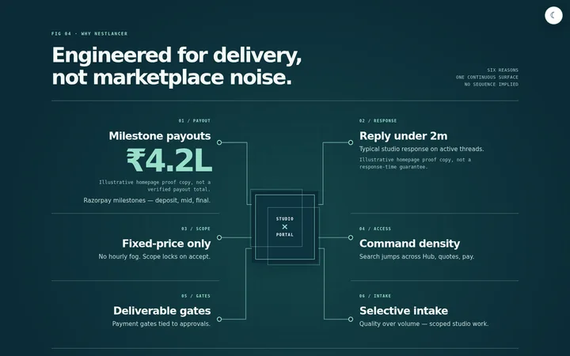
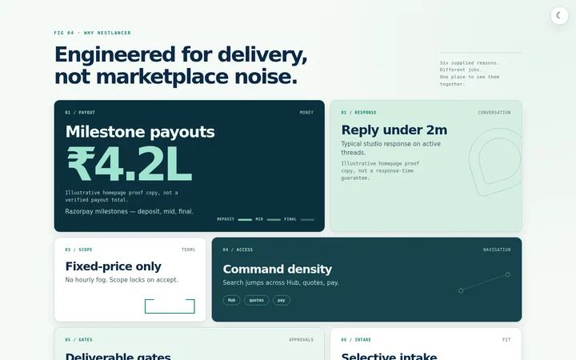

NESTLANCER / SECTION STUDY 04 · SHORTLIST
One case.
Two forms.
The same six supplied reasons, refined to two selected FIG 04 treatments: Convergence and Six-up.
2026 DESIGN RESEARCH · HAND-CRAFTED HTMLILLUSTRATIVE CLAIMS QUALIFIED IN EACH STUDY
THE SHORTLIST / W04 · W05
REAL LIGHT-MODE PREVIEWS · OPEN TO EXPERIENCE EACH SECTION
04 / CONVERGENCEConvergence
Six open statements meet at a rectangular studio-and-portal join. Focus a statement to find its strand; this is a visual metaphor, not a workflow.
ORTHOGONAL MAPFOCUSABLEOPEN STUDY ↗
05 / SIX-UPSix-up
The sole card-based option is intentionally unequal: six specific roles, scales and tones in a controlled, readable bento.
CLAIM-SPECIFIC01—06 IN ORDEROPEN STUDY ↗